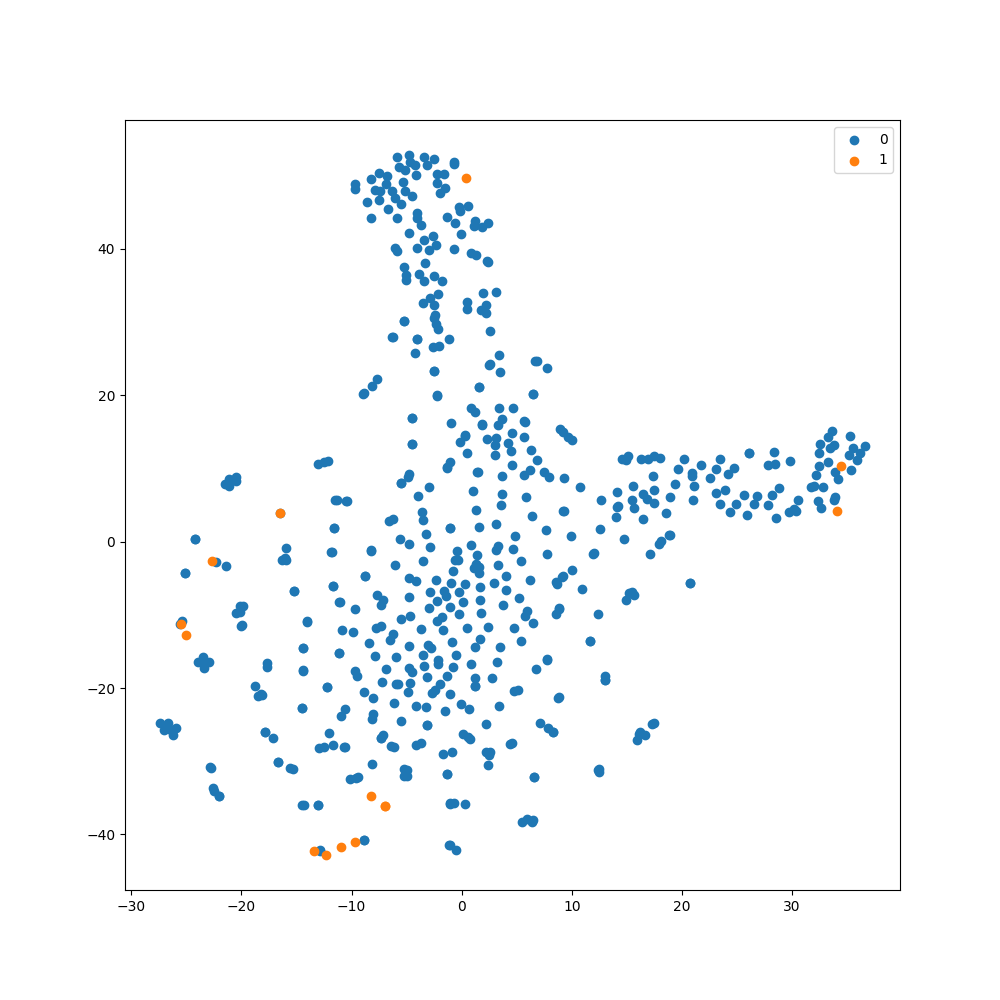

Model representation visualization using t-SNE#
Sometimes, it is useful to be able to visualize the representation
space of a machine learning model to better understand how data
is being represented by the model. Techniques such as t-SNE
allow for the representation space of a model to be visualized in an easy-to-understand
2D plot. This tutorial will explain how to use t-SNE within imbal, extending
the code from the Balanced Fit tutorial.
All the source code for this tutorial can be found at imbal/tutorials/SDO/classificaiton/visualization.py.
Visualizing with t-SNE#
First, we will use the code provided in the Balanced Fit tutorial
to train a model on the SDOBenchmark dataset. Then, we can use
imbal.classification.tsne_visualization
function built into imbal to easily generate a t-SNE plot for our model.
By default, imbal will use the second to last layer of a neural network as
the layer to visualize using t-SNE. This means that the predictions made by
the model are the result of a linear combination of relations shown in the
t-SNE plot. Therefore, ideally, separate classes are clearly separated in the
t-SNE plot.
We add the following code at the end of the original tutorial code:
imbal.classification.tsne_visualization(
model,
x_test,
y_test,
save_figure='tsne-classification-visualization.png'
)
which results in the following plot:

As you can see, there is not a clear separation between the negative (\(0\)) class and the positive (\(1\)) class in the resulting t-SNE plot. This could be due to a number of factors, but a likely cause is that the subset of the SDOBenchmark dataset used in the tutorials is highly reduced, meaning the model is being trained on significantly less data than is provided by SDOBenchmark.